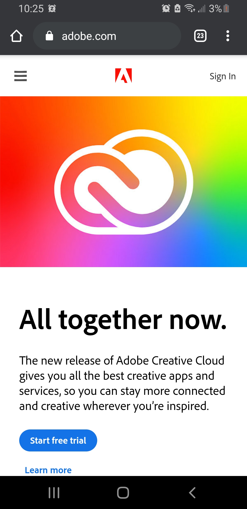
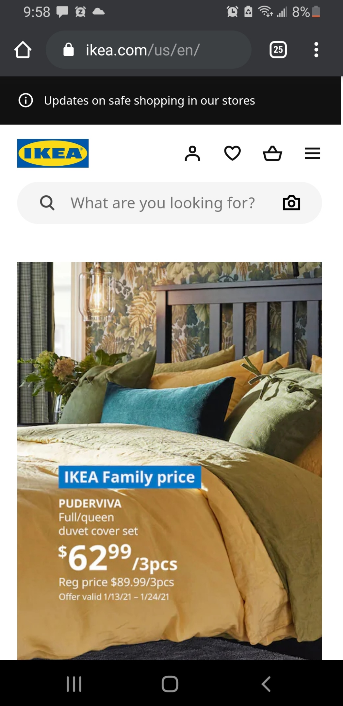
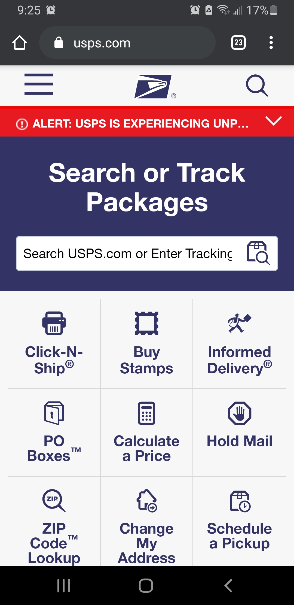

Hick's Law
Adobe
Adobe's website purpose is to bring customers in to buy or at least try their products, which are computer applications that help designers in multiple career fields.
Looking at their mobile website, they have created a great example of Hick's Law. The landing page is very simple, with the menu and search minimized with the focus on the Creative Cloud trial offer. The color of the advertisement stands out without being too loud or annoying.
Contrast
IKEA
While IKEA's logo is dark blue and yellow, their website does not focus on that color. Instead, white, black and various shades of gray are used, with focus on the bright, colorful pictures of their products.
This provides contrast to the webpage. It allows for the viewer's eye to be drawn to the products rather than the webpage itself. It also alludes to minimalistic, Scandanvian style that IKEA uses in their products.
Rule of Thirds
USPS
USPS has done well with using the rule of thirds on their mobile pages. The buttons below the field to enter a tracking number are aligned in a way that is pleasing.
This allows for a user on a mobile device to have a more pleasant user experience. The buttons are large, orderly, and given icons to quickly understand an option a user may want to take.